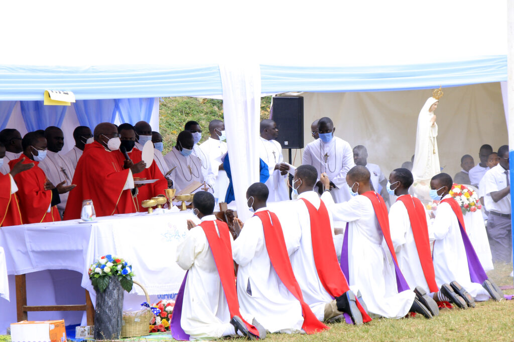

Nestled in the heart of Rubaga, our campus is a haven for learning and growth. Surrounded by lush greenery and a serene atmosphere, our school in Rubaga offers students an inspiring environment that stimulates both academic excellence and personal development. The campus architecture seamlessly blends modern facilities with the charm of the natural surroundings, providing students with a picturesque and inviting place to explore their potential. Our state-of-the-art classrooms, well-equipped laboratories, and expansive sports facilities ensure that every aspect of a student's journey is met with the highest standards. Beyond academics, the campus is a vibrant hub of cultural and social activities, fostering a sense of community and camaraderie among students. Choosing our Rubaga campus means choosing an educational experience that goes beyond the ordinary, creating lasting memories and a foundation for lifelong success.

Religion
Confirmation
Other programms
Brief history of UMHSL
Uganda Martyrs High School Lubaga: A Brief History
Uganda Martyrs High School Lubaga, located in Uganda, was established in 1985 with the vision of providing quality education and nurturing the intellectual and moral development of its students. The school takes its name from the Uganda Martyrs, a group of 23 Anglican and 22 Catholic converts to Christianity who were martyred between 1885 and 1887.
Foundation and Early Years (1985-1990):
Uganda Martyrs High School Lubaga was founded in 1985 with a mission to foster academic excellence, character development, and community engagement. In its early years, the school started with 50 students all male .
Growth and Academic Excellence (1990-2000):
Throughout the 1990s, Uganda Martyrs High School Lubaga experienced significant growth, both in terms of infrastructure and academic offerings. The school gained a reputation for academic excellence, producing graduates who excelled in various fields.
Challenges and Resilience (2000-2010):
The school faced challenges during the early 2000s, possibly related to [mention any challenges the school encountered]. Despite these obstacles, the resilient spirit of the school community, including dedicated staff, students, and parents, played a crucial role in overcoming difficulties.
Modernization and Innovation (2010-Present):
In recent years, Uganda Martyrs High School Lubaga has embraced modern educational practices, incorporating technology into the learning process and adapting to the changing educational landscape.
Notable Alumni:
Over the years, Uganda Martyrs High School Lubaga has produced outstanding alumni who have made significant contributions to various fields, including the gheto kids .
As Uganda Martyrs High School Lubaga continues its journey, it remains committed to its founding principles, preparing students not only for academic success but also for a life of service, leadership, and integrity.
School anthem
Chorus: Labor boys and girls of Uganda
Martyrs High School, labor on
Education is now your tool
Through your work and labor you'll be known
Education is now your tool,
Obedience be now your rule.
1. Sing now you are still strong
Never think of going wrong
Learn the skills that will be of use
Avoid ever to be loose. Chorus……….